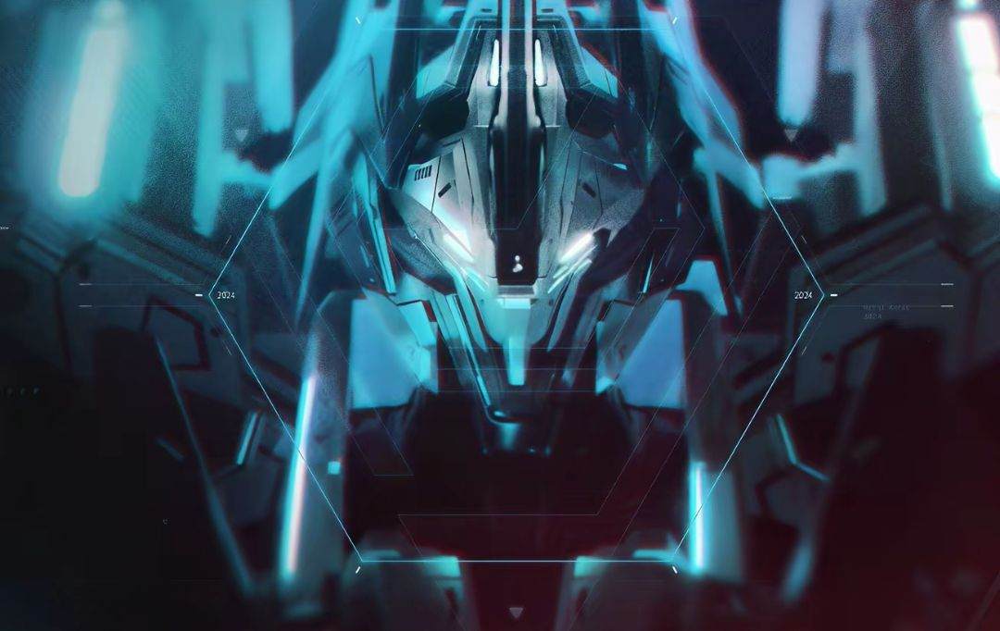
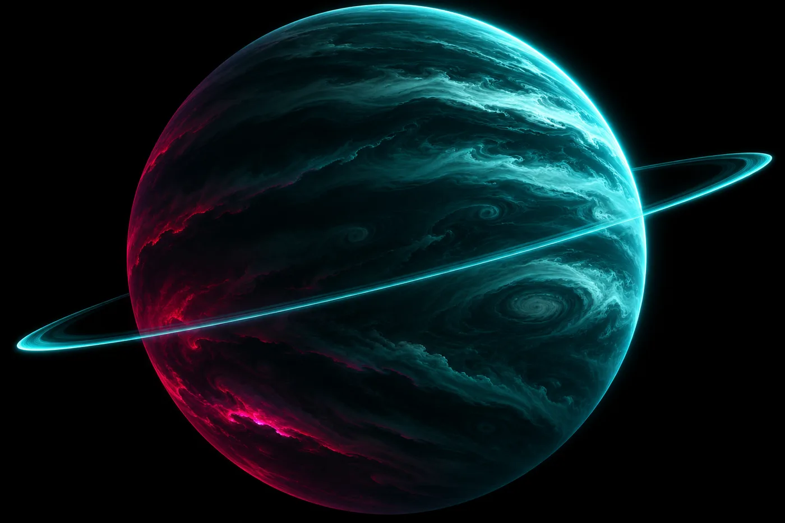
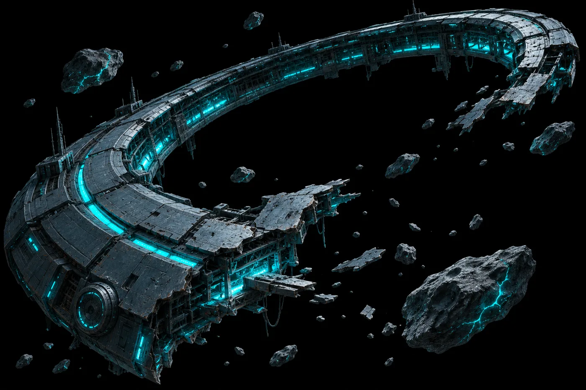
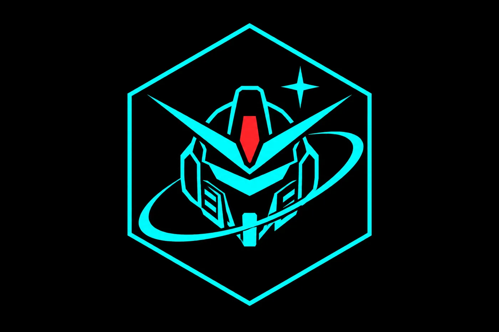

星际机甲 · 先锋计划建议佩戴耳机,在安静的环境中体验
This sequence contains flashing lights and synchronized sound.Please stand by for hyperlink establishment.
— INTERSTELLAR MECHA PROTOCOL —
Press Any Button
HYPERSPACE LINK ESTABLISHED
机体 OR-01 · 出击准备完成敬请期待后续章节